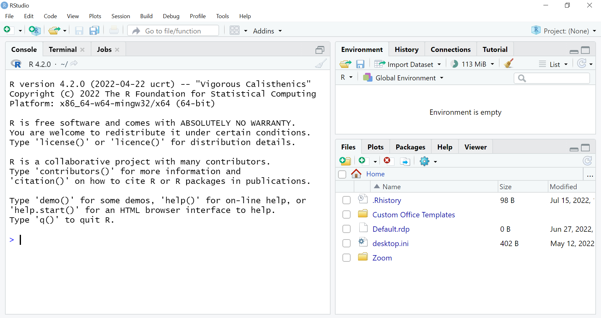
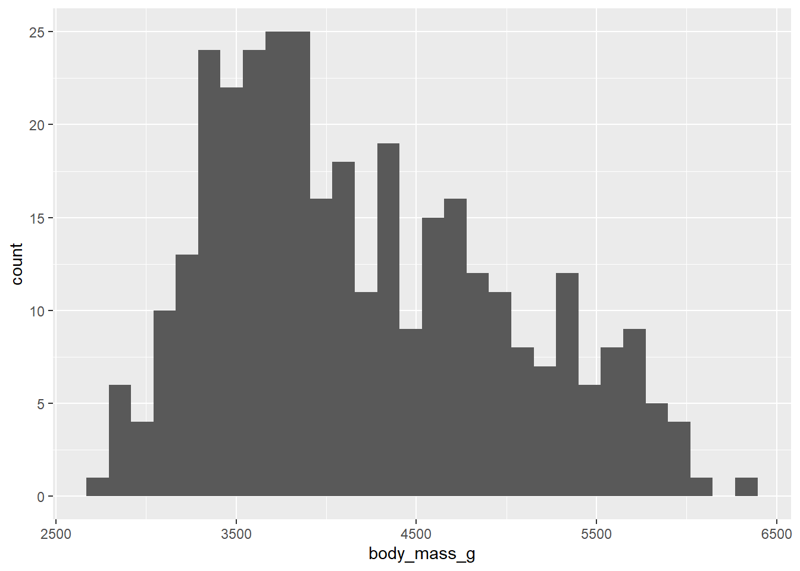

100 - 1Cracking Codes: Adventures with Data
A poll
Go to kahoot.it to answer some anonymous questions.
Opening RStudio
Everyone will code at the same time. You can code on your own, with a friend or just watch.
You need a programme called R to be running in the background while you interact with the nicer-to-use RStudio.
On a university computer, download R and RStudio from AppsAnywhere.
- Click the AppsAnywhere icon, scroll down to “Cran R” and click launch.
- Once R has opened and downloaded onto the computer you can close it.
- Now go back into AppsAnywhere to find RStudio and launch that.
Basic layout
When you first open RStudio, you will see three panels:
- The interactive R console (left)
- Environment/History (tabbed in upper right)
- Files/Plots/Packages/Help/Viewer (tabbed in lower right)

Once you open files, such as R scripts another panel will open in the top left.
- Click on the white square with the plus in green icon top left to open a script.

Working in RStudio
We will write code in our script file and tell RStudio to run our code when we’ve finished writing it.
The simplest thing you can do with R is use it as a calculator. Type the below into the script:
To run this line of code from your script in the R console, click on the Run button at the top right of the script.
R runs your code and returns a result in the console window on the bottom left.
R will print out the answer, with a preceding [1]. Don’t worry about this. Think of it as merely indicating what line the output is on.
If you type in an incomplete command, for example:
100 - R will show a + in the console window instead of a >. This means it’s waiting for you to complete the command.
To solve this error, the solution is to hit “Esc”. This cancels the command and RStudio will give you back the “>” prompt.
This is a big part of coding: writing some code, then problem solving or “debugging” to find out why it won’t work.
Functions
We use functions to tell R what to do. To use a function, we can type its name, followed by open and closed brackets. Anything we type inside the brackets is called the function’s arguments:
#|eval: FALSE
sqrt(25) # this command calculates the square root of 25[1] 5The text after each line of code is called a “comment”. Any comment after a hash symbol # is ignored by R when it runs code. These comments are just for us.
#|eval: FALSE
round(3.1415926, digits = 2) # this prints the number 3.1415926 to 2 decimal places[1] 3.14The digits = argument in the function round tells R exactly how we what it to run the function. In this case we want to round the number to 2 decimal places.
There are thousands of R functions
People don’t try to remember all the names of the many functions in R. You can google them or copy them from other people’s code.
Objects and assignment
We can store values in objects using the assignment operator <-, like this:
x <- 1/40Notice that this command does not print a value. Instead, we stored the number for later in the object x. x now contains the number 0.025. Look for the Environment tab in one of the panes of RStudio, and you will see that x and its value have appeared.
x # this prints what's contained in object x[1] 0.025Now our object x can be used in place of a number in any function that expects a number:
sqrt(x)[1] 0.1581139Object names are not limited to x. You can choose what you name an object.
the.result <- sqrt(x)
my_number <- round(3.1415926, digits = 2)
BigPurpleBanana <- 101 + 99Objects can contain more than one number. For example:
y <- 1:5 # 1:5 means 1,2,3,4 and 5This is incredibly powerful as you can now run a function on all these numbers at once:
log(y)[1] 0.0000000 0.6931472 1.0986123 1.3862944 1.6094379Or use all the numbers in a calculation
sum(y)[1] 15You will get errors and warning messages
Try to run the following code:
sum(z) # add up the numbers in an object called zmyData <- "elephant" # make a object containing a word
mean(myData) # then try to calculate the mean (average) of the word elephant to show a warning messageTip: Errors and Warnings
Errors, like above, are thrown when R cannot proceed with a calculation. Warnings on the other hand usually mean that the function has run, but it may not have worked as expected.
In both cases, the message that R prints out can give you clues on how to fix a problem.
The most unrealistic movie scene ever
Hacking scene from The Social Network
Let’s correct the myths the scene portrays
- When you are coding you do not continuously type really fast on the keyboard.
![In real life, a person that is writing code looks like they're in a stupor - most of the time they're not typing, they're just staring blankly in space. Then will come a moment when they type a bit, hit a key, curse a little, and then it's back to stupor-land again.What goes on in their heads might be the most interesting thing that has ever happened on this Earth, but a camera can only see a person sitting in front of a computer, cold coffee and full ashtray on the side.Be glad movies exaggerate, watching a coder code is about as interesting as watching paint dry :D (except if you're not watching them, but their monitor, and you actually understand the implications of what's happening)](./images/CommentFromCoder.png) Posted on an online discussion forum called How do Hollywood movies and TV shows exaggerate programming and coding as done in real life
Posted on an online discussion forum called How do Hollywood movies and TV shows exaggerate programming and coding as done in real life
Coders don’t often compete aginst each other. In reality, a coders work will not be done in a really competitive atmosphere. Although the industry is seen as competitive by many graduates (BCG report). Universities and lots of companies will support people to do the best coding they can. Projects often require a team of people to work collaboratively. And there are plenty of people who are kindly giving their time and knowledge to help others solve their coding problems in online forums. For example, people have answered over 23 million questions on one popular forum called Stack Overflow.
Coders aren’t all men. All sorts of people do and can code. While there is a male bias in the industry BCG report the lack of diversity causes problems, for example, the algorithms behind some AI are biased towards recognising male voices more accurately. Negative perceptions around computer science affect girls decisions to study certain degrees (Sharma et al., 2021) and mean they might be missing out on interesting and rewarding careers. Groups like R Ladies aim to encourage coding skills in marginalised groups.
The overwhelming majority of people who code are not evil hackers doing harm and creating disruption but working on projects that solve problems and benefit society. To name a few, coders analyse government data to improve systems, create websites and apps that we all use, predict the weather, research new drugs and treatments: there is even an NHS R users group.
Also, I don’t think I’ve ever drank shots or been cheered on by a crowd while writing code!
R Packages
People all over the world are writing new R functions and uploading them on the internet in packages for everyone to use. A package needs to be installed onto your computer, then loaded using the function library before we can use the functions.
We can install and load these packages using this code:
install.packages("ggplot2")
install.packages("dplyr")
install.packages("palmerpenguins") # this downloads the packages ggplot that creates graphs, dplyr that manages data and palmerpenguins that contains example datalibrary(ggplot2)
library(dplyr)
library(palmerpenguins) # library gets the package loaded ready to be used Artwork by @allison_horst
Artwork by @allison_horst
Reading in data
A researcher called Dr. Kristen Gorman at the Palmer Station, Antarctica LTER, a member of the Long Term Ecological Research Network, collected data on penguins and shared that data so we can use it in R.
We can load this data object called penguins into R using the function data.
data(penguins)To view the data, look at the environment tab in the top right window and click on the name of the object ‘penguins’.
Look at the eight measurements, we call these variables.  Artwork by @allison_horst
Artwork by @allison_horst
Let’s explore our data. We can specify variables (columns of numbers) using the $ operator:
penguins$bill_length_mm
penguins$speciesWe can calculate the mean of bill length.
mean(penguins$bill_length_mm, na.rm = TRUE) # na.rm means remove NA (not available) data[1] 43.92193But we can’t use the mean function on a factor.
mean(penguins$species, na.rm = TRUE)Warning in mean.default(penguins$species, na.rm = TRUE): argument is not
numeric or logical: returning NA[1] NAChallenge
Copy, paste then edit the code above to find the mean of flipper_length_mm
Solution to Challenge
Replace the text bill_length_mm variable with flipper_length_mm.
mean(penguins$flipper_length_mm, na.rm = TRUE)[1] 200.9152Challenge
Copy, paste then edit the code above to use the function
tableon the variablespeciesto find out the number of each penguin species.
Solution to Challenge
Change the function from mean to table and delete the argument na.rm = TRUE since is only needed for the function mean.
table(penguins$species)
Adelie Chinstrap Gentoo
152 68 124 Creating graphs
 Artwork by @allison_horst
Artwork by @allison_horst
Making graphs with ggplot2
To make a graph we need to tell R what data object we are using, what variables we want mapped onto the graph and what type of graph we want.
For the ggplot function, the data and variable information are within the brackets. The type of graph is given on a line of code below that.
Here’s a scatterplot of points of body mass against flipper length for each penguin:
ggplot(data = penguins, mapping = aes(x = body_mass_g, y = flipper_length_mm)) +
geom_point()
In the command we use the ggplot function.
We’ve passed in two arguments to ggplot. First, we tell ggplot what data we want to use to make the figure. In this example, that is the penguins data object.
For the second argument called mapping, we used the aes function which is short for aesthetics, to say what variables we want mapped to what part of the graph. In other words what variables we want on the x and y axes.
By itself, the call to ggplot isn’t enough to draw a figure:
ggplot(data = penguins, mapping = aes(x = body_mass_g, y = flipper_length_mm))We need another line of code with the function geom_point, which tells ggplot we want a scatterplot of points:
ggplot(data = penguins, mapping = aes(x = body_mass_g, y = flipper_length_mm)) +
geom_point()
We can add arguments to the geom_point brackets to control the size, transparency (alpha) and shape of the points.
ggplot(data = penguins, mapping = aes(x = bill_length_mm, y = flipper_length_mm)) +
geom_point(size = 5, alpha = 0.5, shape = "diamond")Warning: Removed 2 rows containing missing values (`geom_point()`).Challenge
Edit the code above so that the figure shows how bill length relates to flipper length:
Solution to Challenge
Replace body_mass_g with bill_length_mm:
ggplot(data = penguins, mapping = aes(x = bill_length_mm, y = flipper_length_mm)) +
geom_point(size = 5, alpha = 0.5, shape = "diamond")
Challenge
Choose a different shape and edit the code to make a graph with points that shape. Change the numbers after
size =andalpha =to see what happens.
Solution to Challenge
Here is one possible solution:
ggplot(data = penguins, mapping = aes(x = bill_length_mm, y = flipper_length_mm)) +
geom_point(size = 10, alpha = 0.5, shape = "triangle")Warning: Removed 2 rows containing missing values (`geom_point()`).Layers
More layers can be added to control the way a graph looks. For example, we can change the axes labels:
ggplot(data = penguins, mapping = aes(x = bill_length_mm, y = flipper_length_mm)) +
geom_point(size = 5, alpha = 0.5, shape = "diamond") +
labs(x = "Bill Length (mm)",
y = "Flipper Length (mm)")We could use a theme to control the background colour, gridlines, axis lines. Let’s use one called theme_classic.
ggplot(data = penguins, mapping = aes(x = bill_length_mm, y = flipper_length_mm)) +
geom_point(size = 5, alpha = 0.5, shape = "diamond") +
labs(x = "Bill Length (mm)",
y = "Flipper Length (mm)") +
theme_classic()Colour
If we want to specify that all points should be a blue colour, we use colour =:
ggplot(data = penguins, mapping = aes(x = bill_length_mm, y = flipper_length_mm)) +
geom_point(colour = "blue") # Note the word blue is put in "speech marks".We can also colour the points according to what species they are. This information is in the variable called species in the data.
Putting colour = species in the aes function in the geom line of code does this:
ggplot(data = penguins, mapping = aes(x = bill_length_mm, y = flipper_length_mm)) +
geom_point(aes(colour = species))To specify what colours we want for each species we can use scale_colour_manual:
ggplot(data = penguins, mapping = aes(x = bill_length_mm, y = flipper_length_mm)) +
geom_point(aes(colour = species)) +
scale_colour_manual(values = c("darkorange","purple","cyan4"))Challenge
Choose three colours from this website that lists R colours and change the colours in the above code.
Solution to Challenge
Here is one possible solution:
ggplot(data = penguins, mapping = aes(x = bill_length_mm, y = flipper_length_mm)) +
geom_point(aes(colour = species)) +
scale_colour_manual(values = c("dodgerblue","hotpink","forestgreen"))Extra Challenges
Now add a line of code that gives your graph x and y axes labels saying “Bill Length (mm)” and “Flipper Length (mm)” and a classic theme.
Solution to Extra Challenges
Here is one possible solution:
ggplot(data = penguins, mapping = aes(x = bill_length_mm, y = flipper_length_mm)) +
geom_point(aes(colour = species)) +
scale_colour_manual(values = c("dodgerblue","hotpink","forestgreen")) +
labs(x = "Bill Length (mm)",
y = "Flipper Length (mm)") +
theme_classic()Tip: creating plots
When creating graphs, people adapt code from the internet by replacing the names of the data and variables in the example code with their data.
If searching for ggplot layers that will control specific parts of your graph, using the correct graph terminology helps. For example, tick marks, levels, error bars, axes, legends.
Challenge if there’s time
A lot of a coders time is spent looking on the internet for solutions to problems and sometimes taking examples of code and adapting them using their own data.
Look for some code on the internet that you could adapt to make a histogram of penguin body mass. Go to a search engine like google and type in “histogram in r ggplot”. Some good guides are STHDA and The R Graph Gallery. Copy, paste and edit the code so that the data you use is
penguinsand the variable on the x axis isbody_mass_g.Alternatively, if you have a chatGPT or google bard account, ask it to “write r code to make a ggplot histogram using a data set named penguins and a variable on the x axis named body_mass_g”.
Solution to Challenge if there’s time
The below code was found on STHDA:
library(ggplot2)
# Basic histogram
ggplot(df, aes(x=weight)) + geom_histogram()
# Change the width of bins
ggplot(df, aes(x=weight)) +
geom_histogram(binwidth=1)
# Change colors
p<-ggplot(df, aes(x=weight)) +
geom_histogram(color="black", fill="white")
pIt could be adapted to:
library(ggplot2) # ignore this part as we have already loaded the package ggplot2
# Basic histogram
ggplot(penguins, aes(x=body_mass_g)) + geom_histogram() # changing df to penguins and weight to body_mass_g`stat_bin()` using `bins = 30`. Pick better value with `binwidth`.Warning: Removed 2 rows containing non-finite values (`stat_bin()`).
We could adapt the rest of the code too if we wanted to change the binwidth and colours.
Chat GPT gave:
library(ggplot2)
# Load the penguins dataset
data(penguins, package = "palmerpenguins")
# Create the histogram using ggplot
ggplot(penguins, aes(x = body_mass_g)) +
geom_histogram() +
labs(
title = "Histogram of Body Mass",
x = "Body Mass (g)",
y = "Count"
)Again, we don’t need the pieces of code with the library and data functions as we have already loaded ggplot2 and the palmer penguins data.
Recap the lingo!
Which of these words (functions, debugging, command) are the sentences below describing:
a line of text written that tells the software what you want it to do
trying to fix your code so that it works
instructions represented by a short word that you can use in your code to get the software to perform a particular task
How do people become good at coding?
Here’s a quote from a blog by Kasia Kovacs
{fig-alt = “Although anybody can learn coding, not every person excels in programming. But that’s not because people don’t have the potential to become good. Instead, whether a person succeeds usually depends on their motivation to keep learning and practicing, even if it becomes difficult.”}
Lots of people find it easier to learn a coding language when they need to get something done - an assignment or project. Doing something that you are interested in makes learning coding easier.
Exploring coding further
To learn more of the basics of coding w3schools is a good website. You can learn more R coding on a website. If you wanted to use R after this you could download R and RStudio for free onto your own laptop.
Alternatively, you might consider learning a coding language called python, also on w3schools. Learning python might be more motivating since there are more ideas for fun projects on the web that will encourage you to practice. Projects on the Create & Learn blog are designed for kids but are the simplest and most entertaining.
Adapted from R for Reproducible Scientific Analysis licensed CC_BY 4.0 by The Carpentries